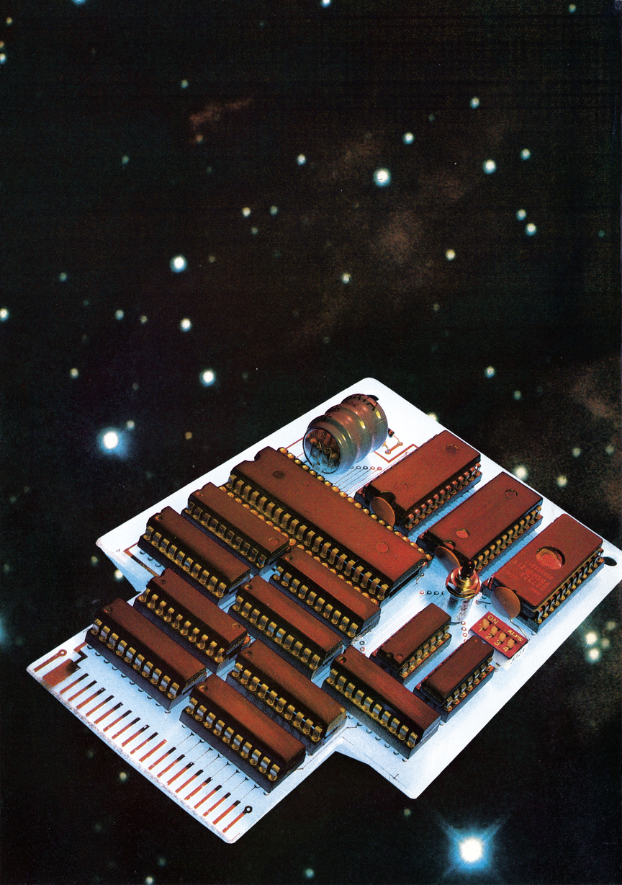
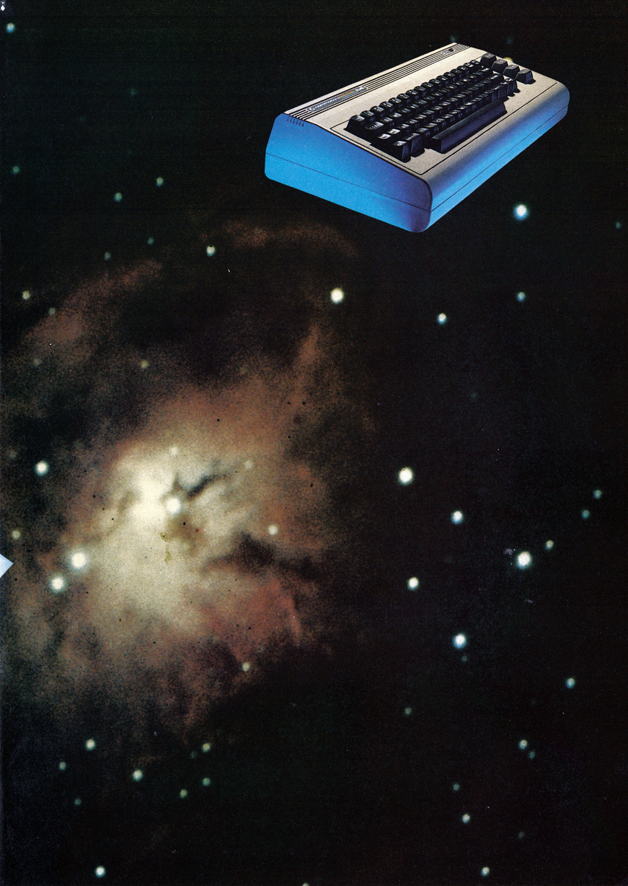

Weltneuheit: C 64 mit Nachbrenner
Selbst eingefleischte Amiga-Fans werden erst einmal sprachlos! Eine Platine macht den C 64 superschnell. Aus einem Sportflugzeug wird quasi ein Düsenjet. Lesen Sie unseren Exklusiv-Testbericht.


Das kann doch kein C 64 sein! Über den Bildschirm bewegen sich dreidimensionale Grafiken völlig ruckfrei und mit hoher Geschwindigkeit. Zack! Ein UFO rast so schnell über den Monitor, daß Sie kaum noch die Struktur des »Feindes« erkennen können. Noch bevor der »Joystick-Finger« den Befehl vom Gehirn erhalten hat und den roten Knopf fast pulverisiert, ist das Flugobjekt aus dem Blickfeld verschwunden.
Das eben beschriebene Phänomen ist keine Utopie mehr. Eine kleine Platine von Roßmöller, die in den Expansion-Port Ihres C 64 gesteckt wird, macht's möglich.
Mit dieser Platine werden Sie in die Lage versetzt, aus Ihrem C 64 entweder einen Schleicher oder einen Flitzer zu machen, wobei geladene und gestartete Programme entweder entsprechend langsamer oder schneller als normalerweise laufen können.
Der Trick liegt in einer Veränderung der Taktfrequenz Ihres Computers, die normalerweise bei ungefähr 985 Kilohertz liegt. Sie haben die Möglichkeit, diese Taktfrequenz vom Stillstand des Computers bis hin zum Vierfachen der normalen Geschwindigkeit einzustellen. Und das Beste an der ganzen Sache: Sie brauchen kein Bastler oder Fachmann zu sein. Einfach die neue Platine in den Expansion-Port des C 64 gesteckt, und los geht's!
Die Möglichkeiten sind enorm. In Zukunft sind Sie in der Lage, ein Programm in seiner Geschwindigkeit um mehr als 400 Prozent zu steigern. Spiele, die mit viel dreidimensionaler Grafik arbeiten, bekommen völlig neue Dimensionen. Bei »Elite« schleichen Sie nicht mehr durch den Weltraum, sondern Sie jagen in einem superschnellen Schiff von Stern zu Stern. Der Flug mit einem Flugsimulator wird von einem ruckenden Schleichweg zu einem reinen Vergnügen. Alle Objekte »zittern« nicht mehr an Ihnen vorbei, sondern bewegen sich schnell und geschmeidig, daß sogar Besitzer eines Amiga oder eines Atari-ST staunend den Mund öffnen. Ihre Fähre bei »Stellar 7« verwandelt sich von einem Kriechtier in einen eleganten Straßenkreuzer, dem keine Entfernung zu groß zu sein scheint.
Natürlich kommen Ihnen diese sagenhaften Geschwindigkeiten nicht nur bei Spielen zugute. Auch professionelle Programme, wie zum Beispiel die Textverarbeitung Vizawrite oder das System Geos, werden von der Platine unterstützt und bringen Sie in einen Geschwindigkeitsrausch, der das Zurückschalten auf die Originalgeschwindigkeit des C 64 fast schon zum Drama werden läßt. Wollen Sie also beispielsweise bestimmte Wörter oder Buchstaben in einem Text ersetzen, so konnten Sie den Vorgang des Suchens und Ersetzens bisher recht gemütlich am Bildschirm verfolgen. Mit der neuen Platine können Sie von Glück reden, wenn Sie das Wechseln der Bildschirmseite noch mitbekommen.
Sie sind noch ein Neuling bei Ihrem Spiel und fühlen sich leicht überfordert. Die Geschwindigkeit des Spieles ist für den Anfang viel zu hoch. Man müßte es verlangsamen können... Ihr Blick streift einen Drehknopf, und im gleichen Augenblick handeln Sie und bremsen den Computer mit einer kurzen Handbewegung ab.
Auch dieser Anwendungsfall wird von der 4-MHz-Platine erfolgreich gemeistert. Sie verfügt über einen eingebauten Drehregler, der es einem erlaubt, den Computer von der vierfachen Geschwindigkeit bis zum Stillstand abzubremsen.
Selbstverständlich arbeitet die neue Schaltung mit einem Trick, um den C 64 auf die hohe Geschwindigkeit zu bringen. Die Erweiterungsplatine enthält einen kompletten Mikrocomputer, dessen Herz ein 16-Bit-Mikroprozessor des Typs 65816 ist. Er ist in der Lage, den Prozessor des C 64 nachzuahmen. In der Fachsprache nennt man das auch Emulation. Dieser Mikroprozessor ist jedoch in der Lage, sehr viel schneller zu arbeiten, als der im C 64 eingebaute 6510. Bei der Roßmöller-Platine werden bis zu 4 Megahertz Taktfrequenz erreicht, was etwa der vierfachen Geschwindigkeit des Original-C 64 entspricht.
Ein waschechter 16-Bit-Computer
Neben der Nachahmung des 6510 kann die neue Platine mit ihrem Mikroprozessor noch sehr viel mehr. Sie enthält beispielsweise die vollen 64 KByte Speicher des C 64 in CMOS-RAM-Ausführung. Da diese RAMs akkugepuffert sind, bleiben sämtliche Programme nach dem Abschalten des C 64 im Speicher erhalten und gestatten Ihnen ein Weiterarbeiten direkt nach dem erneuten Einschalten des Computers. Sie können die Platine aber auch aus dem Expansion-Port ausstecken und damit beispielsweise zu einem Bekannten gehen. Nach dem Einstecken in dessen Computer steht Ihnen auch dort Ihr Programm und die 4-MHz-Karte sofort wieder zur Verfügung.
Wie oben erwähnt, ahmt der neue Mikroprozessor den eingebauten 6510 des C 64 nach und erreicht auf diese Art und Weise eine ausgesprochen hohe Kompatibilität der Erweiterung zum Original-C 64. Es ist aber auch möglich, den Emulationsmodus des 65816-Mikroprozessors durch Maschinensprache abzuschalten. Dazu reicht das Löschen des Expansion-Flags im Prozessor-Statusregister. Jetzt wird aus dem nachahmenden 8-Bit-Prozessor ein echter 16-Bit-Prozessor (wie ihn zum Beispiel auch ein Personal Computer oder der Amiga enthält), der über einen stark erweiterten Befehlssatz verfügt und sehr viel mehr Speicher verwalten kann, als das der 6510 erlaubt. Wie der Amiga oder der Atari-ST, kann jetzt auch der C 64 theoretisch bis zu 16 MByte (16777216 Byte!) Speicher direkt adressieren. Ohne Erweiterung muß er sich mit 64 KByte (65536 Byte) begnügen. Eine Aufrüstung des Speichers der 4-Megahertz-Platine auf 1 MByte wird von Roßmöller bereits in Kürze lieferbar sein und ein sehr effektives Arbeiten auf dem C 64 ermöglichen, wobei diese Erweiterung auch im Emulationsmodus angesprochen werden kann.
Im Test erwies sich unsere 4-Megahertz-Platine als sehr kompatibel zu vorhandener Software auf dem Markt. Beschleunigt wurden fast alle Programme. Blieb die Geschwindigkeit bei einigen Programmen gleich, so lag das durchweg daran, daß diese die eingebauten Timer und Echtzeituhren des C 64 zu ihrer Steuerung verwenden, und diese werden natürlich nicht beschleunigt. Echte Probleme gab es hauptsächlich mit Programmen, die mit den illegalen Opcodes des 6510-Mikroprozessors arbeiten (zum Beispiel einige »gepackte« Programme). Diese undefinierten Befehle werden von dem neuen Prozessor natürlich nicht emuliert. Da sich die Anzahl solcher Programme in Grenzen hält, kann man in dieser Hinsicht aber nicht von einem nennenswerten Nachteil sprechen. Immerhin ist es jederzeit möglich, die Platine mit einem Schalter abzuschalten und damit den Originalzustand des Computers wieder herzustellen.
Die hohe Kompatibilität der 4-Megahertz-Platine ist nicht zuletzt auch darauf zurückzuführen, daß sie — bis auf ganz wenige Änderungen — das Original-Betriebssystem des C 64 enthält. Das EPROM, das auf der Platine eingesteckt ist, kann aber noch drei andere Betriebssysteme aufnehmen, so daß Sie in die Lage versetzt werden, Ihren bisherigen Floppy-Speeder weiter zu verwenden. Sie müssen lediglich dessen Betriebssystem zusätzlich in das EPROM auf der Platine »brennen« und dann einen Umschalter betätigen, und schon ist Ihr eigenes Betriebssystem wieder bereit.
In Kürze wird es zu der 4-MHz-Platine noch einen Debugging-Zusatz geben, der gegen einen Aufpreis (stand bei Redaktionsschluß noch nicht fest) zu erhalten sein wird. Es handelt sich dabei um eine Zusatzplatine, die auf das Beschleunigungssystem aufgesteckt wird. Dem Anwender wird es dadurch in Zukunft möglich, den Ablauf seiner Maschinenprogramme mit einem Debugger zu verfolgen. Dieser Debugger arbeitet hardwaremäßig und erlaubt sowohl das Setzen eines Punktes, an dem der Programmablauf stoppt, als auch das Verfolgen der Vorgänge auf dem Daten- und Adreßbus des Mikroprozessors mittels einer eigenen Anzeige. Auf diese Art und Weise können Sie jedes beliebige Programm »verfolgen«. Schwierigkeiten, wie man sie von Software-Debuggern kennt, zum Beispiel Probleme mit Interrupts, gehören damit der Vergangenheit an.
Kommen wir zum Fazit. War vielleicht mancher der Auffassung, daß der C 64 in der nächsten Zeit »ausstirbt«, weil er es an Leistungsfähigkeit mit neuen Computern nicht mehr aufnehmen kann, so muß dieser Gedanke mittlerweile in zweierlei Hinsicht verworfen werden.
Erstens wurde vor kurzer Zeit in Deutschland der 1000000ste C 64 verkauft. Diese Zahl und die weiter ansteigenden Verkaufszahlen sichern die Existenz des C 64 noch auf Jahre hinaus.
Der zweite Aspekt kommt von seiten Roßmöllers. Die 4-Megahertz-Platine erfüllt vielen C 64-Besitzern einen Wunsch, den sie sicherlich schon lange hegen: »Wenn er doch nur etwas schneller wäre...«. Durch die neue Platine legt der C 64 eine Geschwindigkeit vor, die ihn weit von der Konkurrenz abhebt (Schneider, Atari). Mit dem Heimcomputer C 64 ist ab jetzt ein professionelles Arbeiten möglich, wie das bisher nur mit größeren Computern zu verwirklichen war: schnelle Text- und Datenverarbeitung, grafische Animation und natürlich schnelle und gleichzeitig grafisch aufwendige Spiele. Und das alles wird ohne Bastelei ermöglicht.
Für einen Preis von 398 Mark bekommt der Anwender eine Revolution auf dem Computermarkt, für die in Zukunft auch mehrere Erweiterungen und früher oder später auch bestimmt die erste spezielle Software zu erhalten sein wird. Den Debugger für die Platine werden wir Ihnen übrigens schon in der nächsten Ausgabe des 64'er-Magazins präsentieren.
(ks)Bezugsquelle: Roßmöller GmbH, Maxstraße 50-52, 5300 Bonn 1, Telefon: (0228) 659980